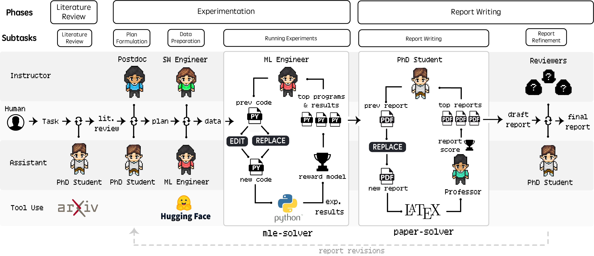
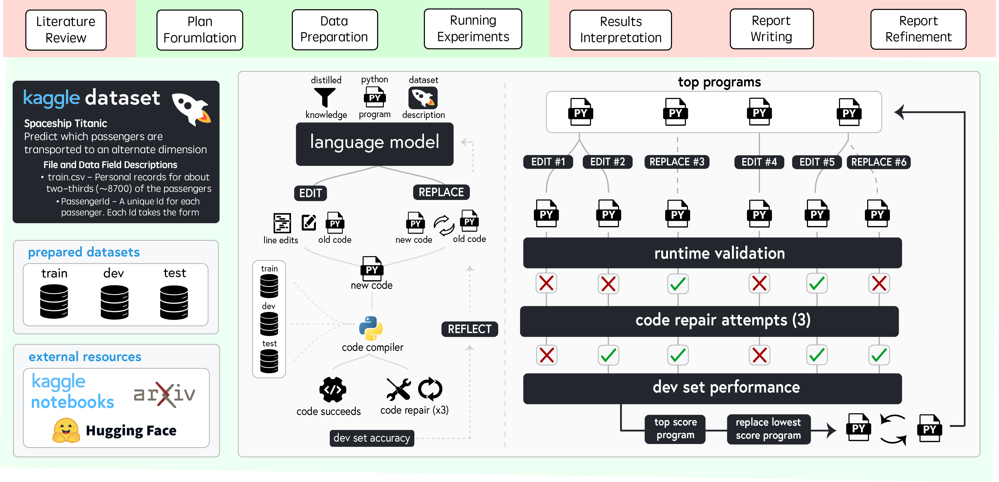
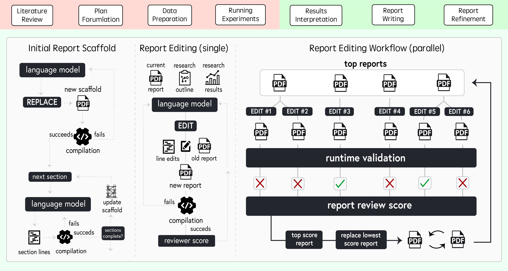

First and foremost, Agent Laboratory is meant to assist you as the human researcher toward implementing your research ideas. You are the pilot. Agent Laboratory provides a structured framework that adapts to your computational resources, whether you're running it on a MacBook or on a GPU cluster. Agent Laboratory consists of specialized agents driven by large language models to support you through the entire research workflow—from conducting literature reviews and formulating plans to executing experiments and writing comprehensive reports. This system is not designed to replace your creativity but to complement it, enabling you to focus on ideation and critical thinking while automating repetitive and time-intensive tasks like coding and documentation. By accommodating varying levels of computational resources and human involvement, Agent Laboratory aims to accelerate scientific discovery and optimize your research productivity.
Agent Laboratory consists of three primary phases that systematically guide the research process: (1) Literature Review, (2) Experimentation, and (3) Report Writing. During each phase, specialized agents driven by LLMs collaborate to accomplish distinct objectives, integrating external tools like arXiv, Hugging Face, Python, and LaTeX to optimize outcomes. This structured workflow begins with the independent collection and analysis of relevant research papers, progresses through collaborative planning and data preparation, and results in automated experimentation and comprehensive report generation. Details on specific agent roles and their contributions across these phases are discussed in the paper. The modular design ensures compute flexibility, accommodating diverse resource availability while maintaining efficiency in generating high-quality research artifacts.
The first step toward performing research is building the capability for solving ML problems. Agent Laboratory addresses this through the mle-solver. This tool acts as a general purpose ML code solver, taking in research directions from previous phases as text and iteratively improving research code.To accomplish this, a collection of top programs are iteratively conditioned on inputs like task instructions, command descriptions, and distilled knowledge in order to improve the experimental results according to a scoring function. It generates two commands: REPLACE, which rewrites all code, and EDIT, which modifies specific lines. Successfully compiled code updates top programs based on scores, while errors prompt up to three repair attempts before trying new code. The agent reflects on each step to refine outcomes.
The second step is generating a research report based on the experiment design and results. For this we introduce the paper-solver, which focuses on report generation. This module acts as a code-to-report generator, summarizing the outputs and findings from previous experimental phases into a human-readable academic paper. paper-solver synthesizes research from previous stages, providing researchers with a clear summary of accomplishments. It does not replace academic paper writing but aids in creating cohesive reports. Inputs include the research plan, experimental results, derived insights, and a literature review, producing outputs in the standard academic paper format suitable for conference submissions.
@inproceedings{schmidgall2024AgentLaboratory,
author = {Samuel Schmidgall},
title = {Agent Laboratory: Using LLMs as Research Assistants},
year = {2024},
}